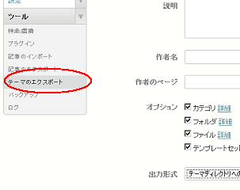
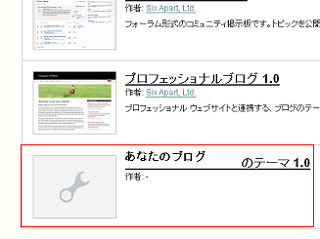

Movable Typeの引越し方法
Movable Typeを引越しをする場合は、主に2種類のケースがあるかと思います。
ひとつは、ドメインはそのままにサイトを違うサーバーへ移動するケース。
そしてもうひとつは、サーバーは変えずに、違うドメインへURL変更して引越すケースです。
今回、後者の同一サーバー内で新しいドメインへURL変更して引越す機会があったので、その手順について簡単に書いておきます。
Movable Typeでサーバーは変更せずに、ドメインのみを引越しする手順
ブログのドメインを新しいものに変更する場合、旧サイトとまったく同じものを別に用意し、旧サイトから新サイトへと301リダイレクトして移転するのが一般的かと思います。
そのようなわけで、旧ブログと同じものをもう１個作ればいいということになりますが、Movable Typeをカスタマイズしている場合、記事のエクスポートのほかにも、カスタマイズしたテンプレートの出力も必要になります。
実際に引越しをする前に、まず、Movable Typeのバージョンを最新版にしておくことをおすすめします。
【①：テンプレートのエクスポート】
旧ブログのMovable Typeにログインして、「ツール - テーマのエクスポート」でテーマディレクトリへのインストールを選択します。

もし、違うサーバーへ引越しする場合は「ダウンロード」を選択することになりますが、ここでは「テーマディレクトリへのインストール」を選択しておきます。
【②：ブログ記事のエクスポート】
次に、「ツール - 記事のエクスポート」で、ブログ記事をダウンロードしておきます。
分割しないでダウンロードした方がいいと思います。
【③：新規ブログの作成とドメイン設定】
次に、新規のブログをつくり、引越し先のドメインを設定しておきます。
（ブログの作り方については省力）
【④：テンプレートのインポート】
作成したブログの「デザイン - テーマ」の箇所を見てみると、先ほどインストールしたテーマが表示されているのでそれを適用して再構築します。

【⑤：記事のインポート】
次に、「ツール - 記事のインポート」で先ほどダウンロードしたブログ記事のデータをアップロードします。
ここで、自分のブログ記事としてインポートした場合、投稿者名が変わるような気がしますが詳細は不明です。
どちらにしても同じ著者だと思うので、特に変更しなくていいかと思います。
文字コードなども選択してアップロードしますが、カテゴリなどは特に指定しなくても旧サイトのまま設定されるはずです。
記事のインポートが終わったら、ブログを再構築をして表示させてみましょう。
画像関連のアイテムはエクスポートできないので、FFFTPなどのツールで一括アップロードすると簡単です。
大量のアイテムがある場合はバックアップ機能を使うと便利かもしれません。
https://blog-tips.net/blog/mt/mtsqlitemysql.html
【⑥：リンク関係のチェック】
内部リンク関係を相対リンクでテンプレートをカスタマイズしている場合は問題ないですが、絶対リンクで記入している箇所があれば新しいドメインのURLに書き換えます。
Website Explorerなどの外部リンクを調べられるツールを使って、新ドメインから旧ドメインへのリンクはすべてなくすようにしましょう。
【⑦：301リダイレクト設定】
最後に、レンタルサーバー側の旧ドメインのフォルダに.htaccessを作成し、301リダイレクト設定をします。
.htaccessに、Redirect permanent / http://新ドメイン/ のように記入し、改行をして保存します。
無限ループしたりすることもありますので、実際に旧ドメインにアクセスしてみて、新ドメインへきちんとリダイレクトされていることを確認しましょう。
加えて、グーグルのウェブマスターツールでサイトの移転を知らせるのも有効かと思います。